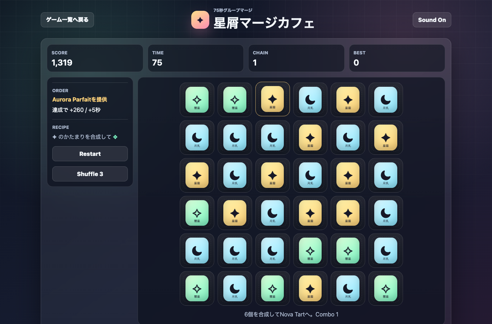

遊び方
- 同じスイーツが上下左右に3つ以上つながったかたまりを探します。
- そのかたまりをクリック/タップすると、選んだ場所でひとつ上のメニューへ合成されます。
- 75秒でできるだけ高いスコアと注文達成を狙います。
マージパズル / 2048風 / 無料ブラウザゲーム
星屑マージカフェは、3つ以上つながった同じスイーツのかたまりを選んで合成する無料ブラウザマージパズルです。2048風の合成パズルを、75秒の短時間スコアアタックとしてスマホでもPCでも遊べます。

大きなかたまりほど得点が伸びます。注文対象を作ると時間が5秒回復するため、注文レシピの1つ下のスイーツを優先して探しましょう。
星屑マージカフェは、2048やスイカゲーム系の合成パズルが好きな人に向いた、短時間で遊べる無料ブラウザゲームです。同じ種類のかたまりを素早く見つける判断力と、注文達成で時間を伸ばすスコアアタック性があります。
同じスイーツを探す判断力と、大きなかたまりを一気に合成する爽快感、注文達成の時間回復が組み合わさったスコアアタックです。インストール不要で、休み時間やスキマ時間の暇つぶしにも向いています。
はい。無料ブラウザゲーム広場では、インストール不要で無料プレイできます。
スマホ・PC対応です。スマホでは3つ以上つながった同じスイーツのかたまりをタップして選びます。
2048、数字マージ、スイカゲーム系の合成パズル、短時間で遊べるミニゲームが好きな人におすすめです。
星屑マージカフェと近い無料ブラウザゲームを、目的や端末別の入口から探せます。